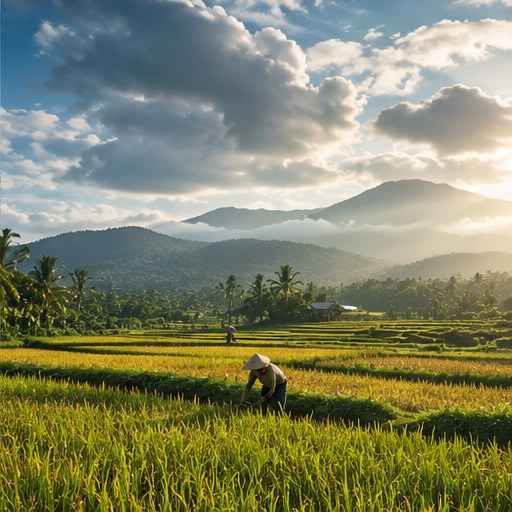

01
Membangun pemahaman
Membedakan cuaca, iklim, pemanasan global, dan efek rumah kaca agar istilah dasar tidak tertukar.
Iklimara dibuat sebagai website edukasi untuk membantu pembaca memahami hubungan antara ilmu iklim, sumber emisi, dampak, mitigasi, dan adaptasi.
Alur tujuh halaman mengikuti perjalanan belajar: halaman beranda memberi peta, halaman 2–6 menyajikan materi inti, dan halaman ini menjelaskan tujuan serta mengumpulkan rujukan yang digunakan.

Materi disusun untuk pembelajaran, bukan sebagai pengganti penilaian risiko lokal atau panduan resmi saat bencana.
Membedakan cuaca, iklim, pemanasan global, dan efek rumah kaca agar istilah dasar tidak tertukar.
Melihat bagaimana emisi dari energi, industri, lahan, pertanian, dan sampah berkaitan dengan risiko pada manusia dan alam.
Membantu pembaca mengenali langkah mitigasi dan adaptasi yang dapat dicoba, diukur, dan dievaluasi.
Pelajar, mahasiswa, komunitas kampus, dan masyarakat umum yang ingin memahami isu perubahan iklim dengan bahasa yang lebih mudah diikuti.
SDG 13 atau Climate Action mendorong tindakan segera untuk mengatasi perubahan iklim dan dampaknya. Upaya ini membutuhkan pengurangan emisi, kesiapsiagaan, adaptasi, serta kerja sama individu, masyarakat, dunia usaha, dan pemerintah.
Baca tujuan SDG 13 ↗Tautan di bawah mengikuti rujukan yang dicantumkan dalam dokumen materi. Sebagian angka pada materi disebut sebagai ringkasan sekunder atau estimasi awal; perhatikan catatan tahun, satuan, dan metode.
Materi aksi adaptasi pada halaman 6 dalam dokumen tidak menyertakan daftar pustaka tersendiri. Untuk pengecekan informasi dan kesiapsiagaan lokal, halaman tersebut menyebut sumber resmi BNPB, BPBD, dan BMKG; tautan BMKG di atas tersedia dalam referensi dampak. Cari panduan BNPB/BPBD sesuai daerah dan ikuti arahan otoritas setempat.